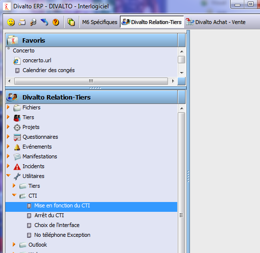
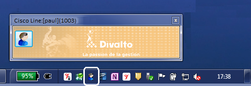
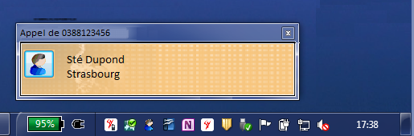
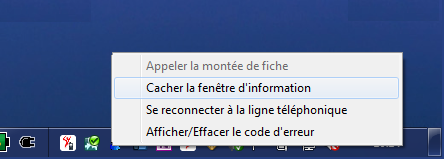
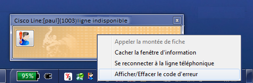
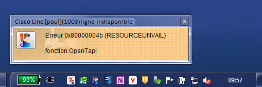

La mise en fonction du CTI se fait par le menu Divalto : Relation-Tiers : Utilitaires : CTI : Mise en fonction du CTI :

Ce choix lance le connecteur Divalto pour Tapi et affiche une fenêtre d'informations plus une icône dans la barre des tâches de Windows (zone de notification - traybar) :

Si le nom de la ligne est erroné, vous obtenez le message suivant :
Lors d’un appel entrant et si le numéro existe dans la base de données du CRM de Divalto, la fenêtre d'informations affiche les propriétés du correspondant. Le bouton à gauche permet d'appeler la fonction "Montée de fiche" (lorsque celle-ci n’est pas automatique) :

Un clic droit à la souris soit sur le bouton du Connecteur Divalto pour Tapi de la traybar, soit dans la fenêtre d’informations permet d’afficher le menu suivant :

Appeler la montée de fiche.
Fait appel à la fonction "Montée de fiche" de Divalto.
Cacher la fenêtre d'information.
On peut afficher ou cacher la fenêtre d’informations.
Remarque : Si la fenêtre est cachée, l'appel de la montée de fiche reste possible en sélectionnant le choix du menu correspondant à partir de la traybar.
Se reconnecter à la ligne téléphonique.
A utiliser lorsqu'un nouveau paramétrage a été fait sur le serveur de téléphonie ou lorsque la ligne est en mode indisponible et que l'on souhaite faire immédiatement une tentative de connexion sans arrêt et redémarrage du CTI.
Afficher/Effacer le code d'erreur.
Si la ligne devient indisponible (par exemple lorsque la connexion avec le serveur de téléphonie est momentanément coupée) ou pour toute autre erreur, le connecteur passe la ligne en mode "Indisponible" et fait automatiquement plusieurs tentatives de reconnexion (d'abord toutes les 3 secondes puis toutes les 20 secondes).
Si l’erreur persiste, ce choix permet d'afficher (puis d'effacer) le texte et le numéro de l’erreur renvoyés pas le driver Tapi de votre fournisseur de téléphonie :

